Day 1 · July 24
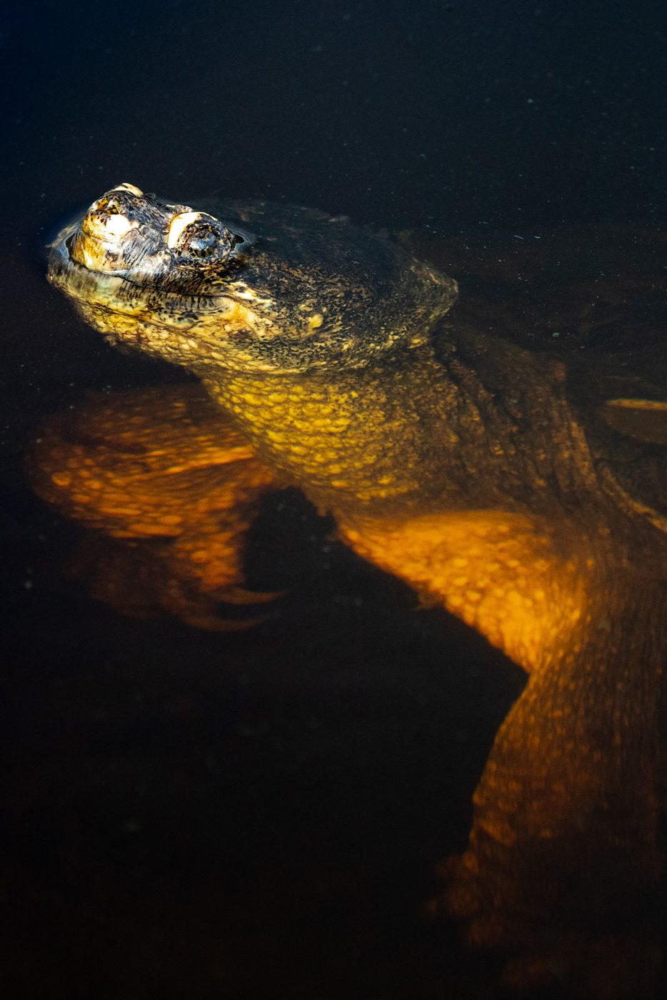
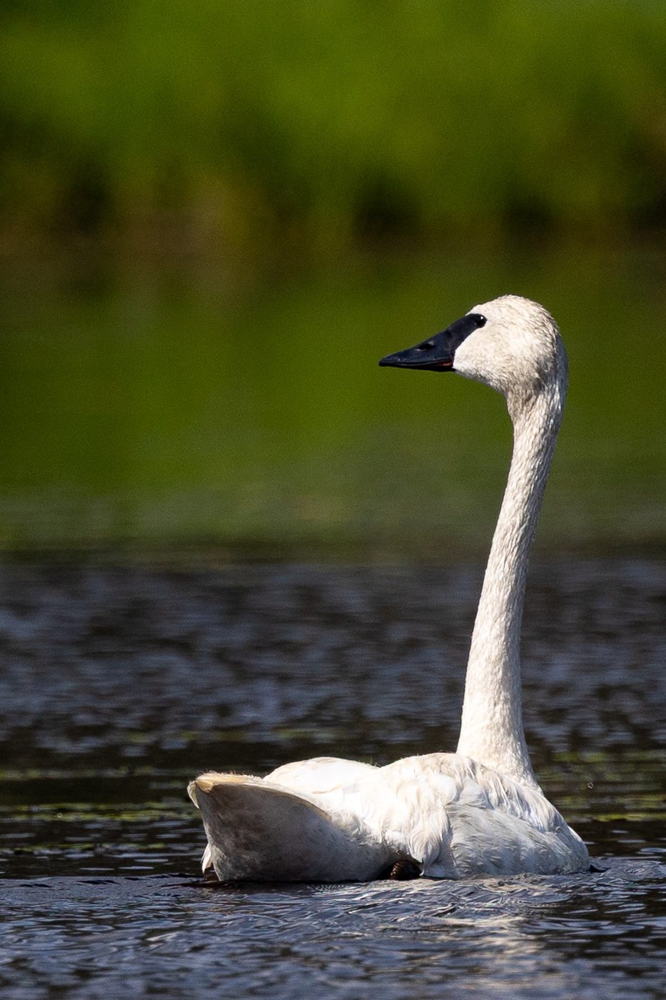
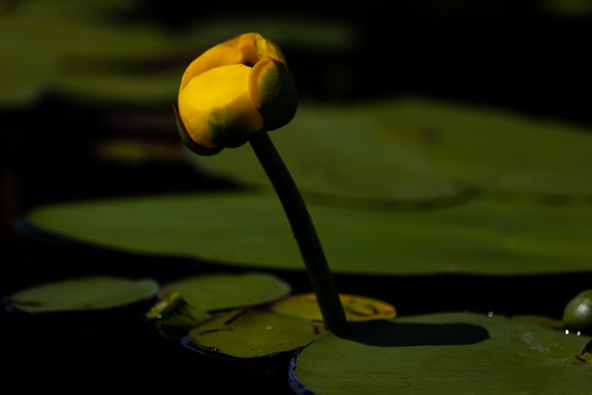
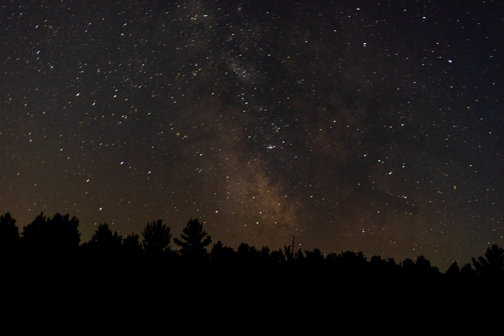
Approx. distance: about 8.5 miles.
Observed: haircap mosses, rock harlequin, Watershield, Rose Pogonia, purple pitcher plant, Variegated Yellow Pond-Lily, North American Green Frog, American Toad, Floater Mussels, flat-topped goldenrod, rough cinquefoil, Stratiomys badia, Calico Pennant, North American Medicinal Leech, Haemopidae.
Day 2 · July 25
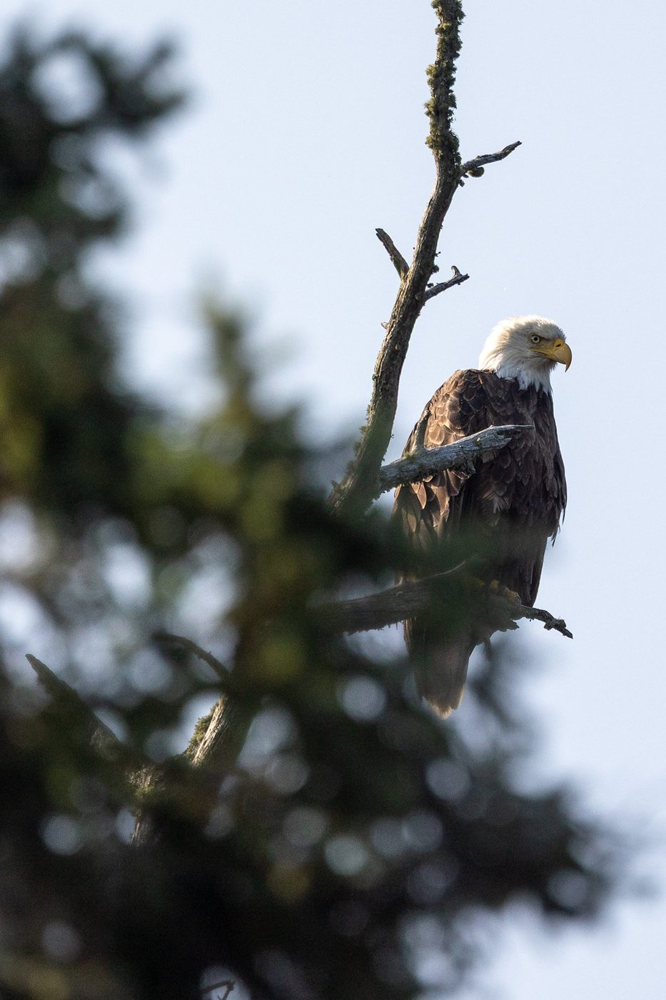
Approx. distance: about 7 miles.
Observed: side-flowering skullcap, swamp candles, Even-toed Ungulates and Cetaceans, Stratiomys badia, Painted Turtle.
Day 3 · July 26
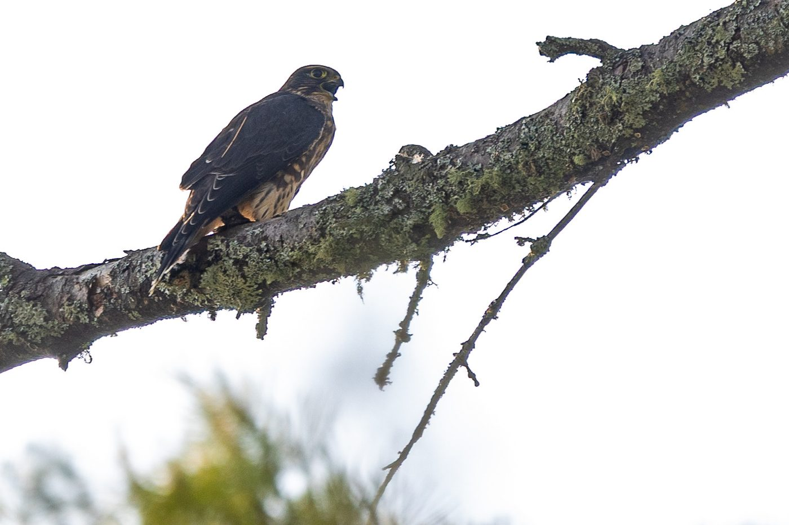
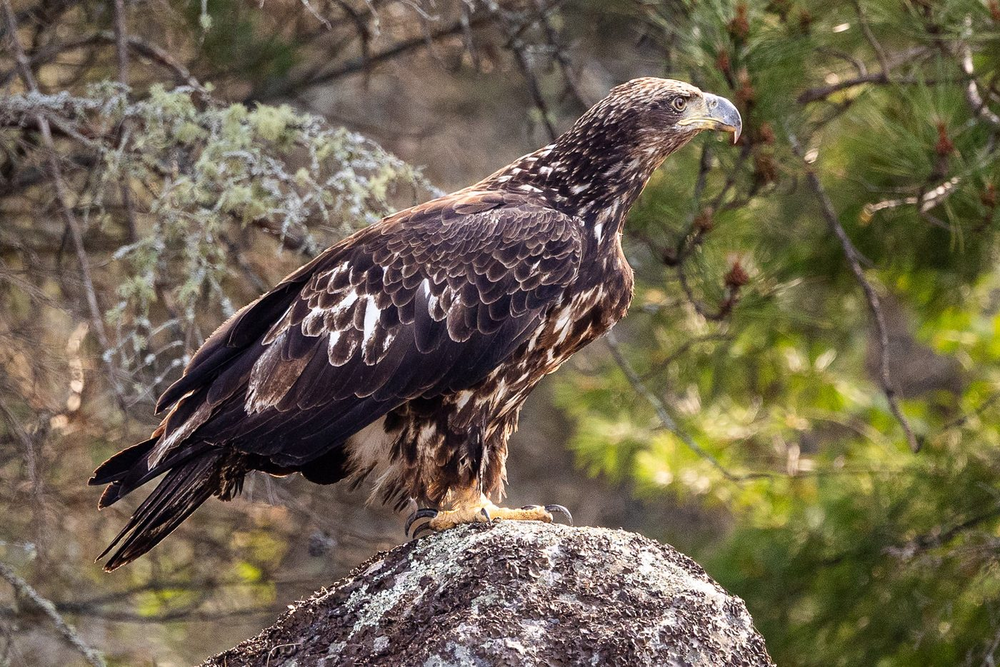
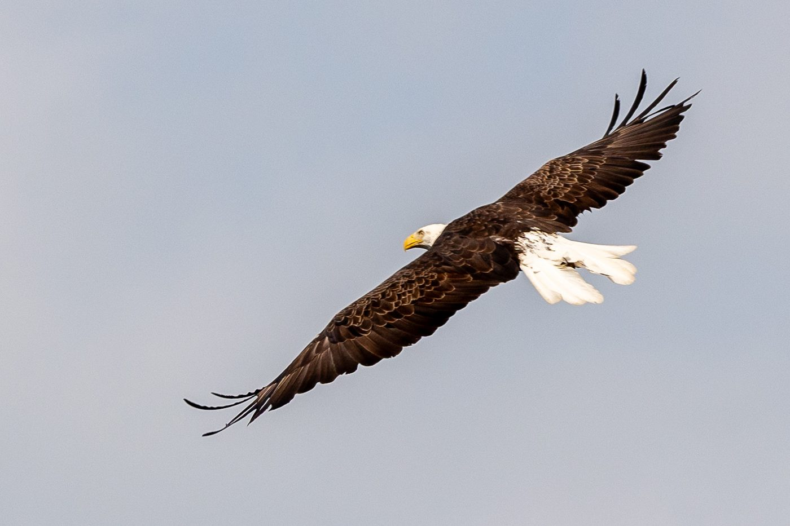
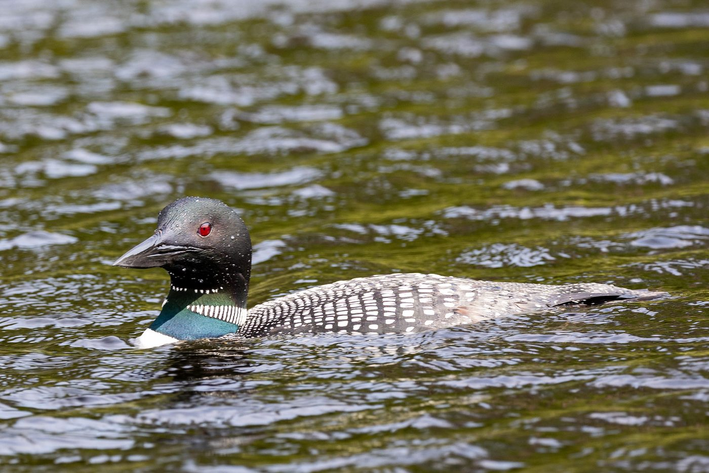
Approx. distance: about 13 miles.
Observed: Merlin, Furrow Spiders, Phaeolus, balsam fir, Dragonhunter, Nymphalis l-album j-album, crown-tipped coral fungus, Common Gilled Mushrooms and Allies, dead man's fingers, lady ferns, wood horsetail, Common Loon, Tabanus marginalis, Common Raven.
Day 4 · July 27
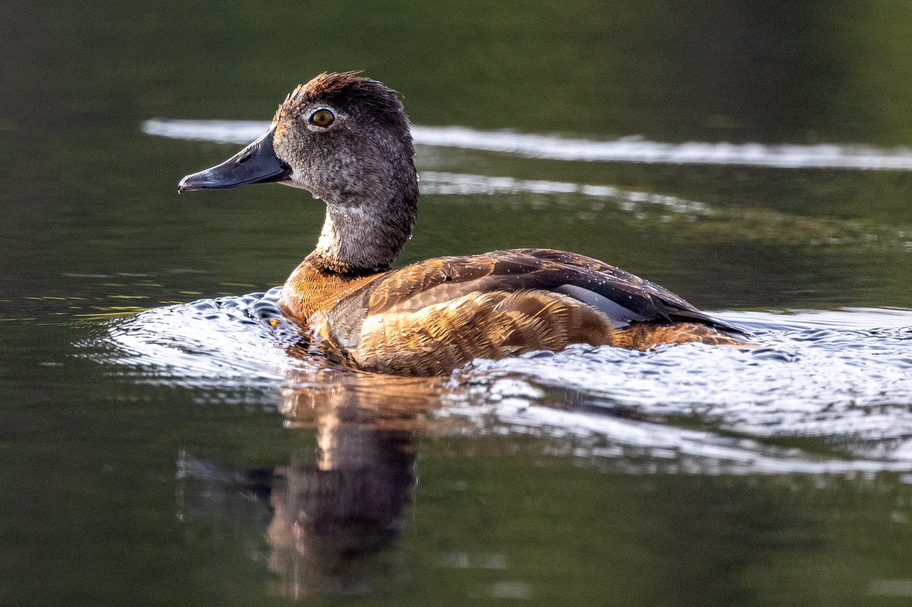
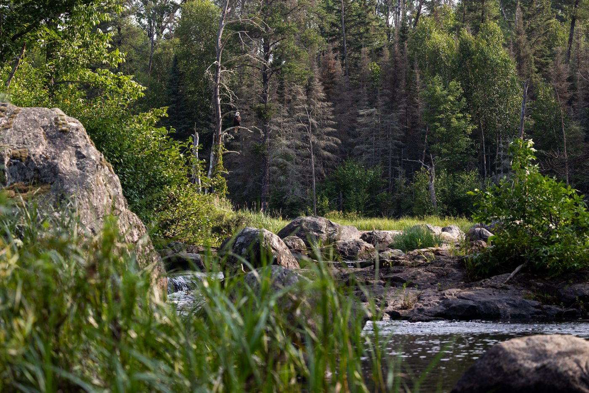
Approx. distance: about 14 miles.
Observed: Cenopis, American Beaver, Bald Eagle, Ring-necked Duck.